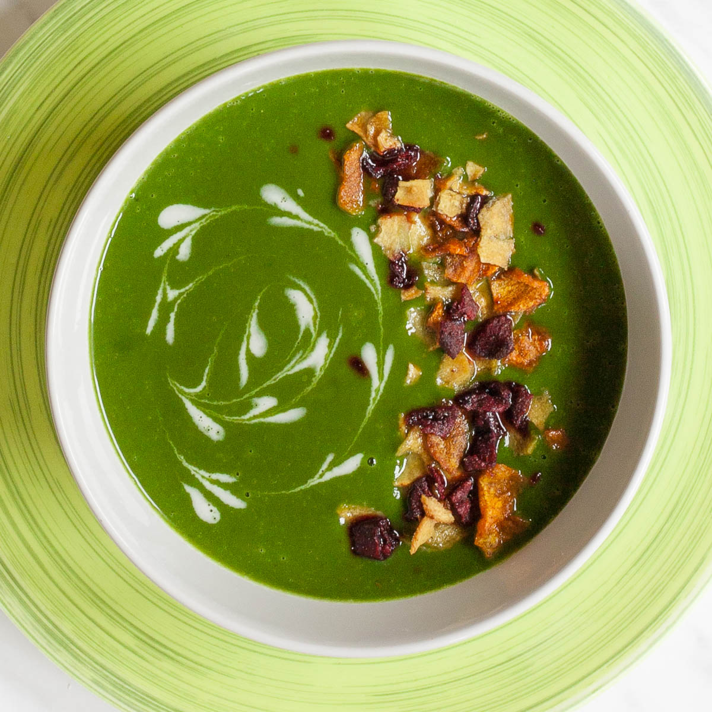

Spinach Soup
Spinach soup is a healthy one-pot liquid meal prepared with palak leaves, milk, and other spices. while there are several ways of preparing healthy spinach soup. But this recipe is the simplest, yet effective healthy soup recipe compared to all the other weight-loss soup recipes.

Ingredients
- 2 tsp oil
- 2 cloves garlic
- ½ inch ginger
- 2 tbsp onion, sliced
- 1 bunch palak / spinach
- 2 tsp oil
- 1 tbsp butter
- 2 tsp maida
- 1 bay leaf
- 4 cup milk
- ½ tsp pepper powder
- ½ tsp salt
- ½ tsp sugar
- 2 tbsp cream
Instructions
- Firstly, in a pan heat 2 tsp oil. Add 2 cloves garlic, ½ inch ginger and 2 tbsp onion.
- Saute until the onions shrink slithgly. Do not brown the onions as the flavour will change.
- Now add 1 bunch palak and saute until the palak shrinks completely.
- Cool completely, and transfer to the mixer jar.
- Add water and grind to a smooth paste. Keep aside.
- In a large kadai heat 2 tsp oil, 1 tbsp butter and add 2 tsp maida.
- saute on low flame until the maida turns aromatic. Do not brown the maida, just fry until the maida turns aromatic.
- Now add 1 bay leaf and saute slightly.
- Further, add 4 cup of milk and mix using a whisk.
- Continue to cook until the milk thickens.
- Also, add in prepared palak puree and cook well.
- Simmer for 2 minutes, or until the flavors are absorbed.
- Add in ½ tsp pepper powder, ½ tsp salt, ½ tsp sugar, and 2 tbsp cream. Mix well.
- Finally, enjoy Palak Soup Recipe garnished with cream.
Home